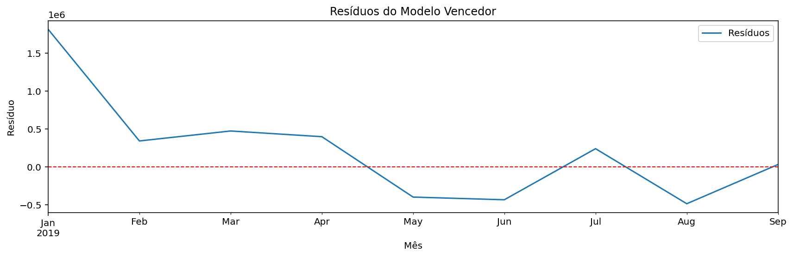

Dataset: Sales_2019 (12 meses) • Horizonte: 3 meses
| Modelo | MAE | RMSE | MAPE% |
|---|---|---|---|
| SARIMAX | R$ 1.749.386,14 | R$ 1.843.882,09 | 44,20% |
| HoltWinters | R$ 2.148.179,53 | R$ 2.257.437,40 | 54,46% |
SARIMAX
Ljung-Box p=0,2969; Jarque-Bera p=0,2842; Breusch-Pagan p=0,0118
| Mês | Previsão de Receita |
|---|---|
| 2019-10 | R$ 2.100.438,09 |
| 2019-11 | R$ 2.100.584,72 |
| 2019-12 | R$ 2.100.592,19 |